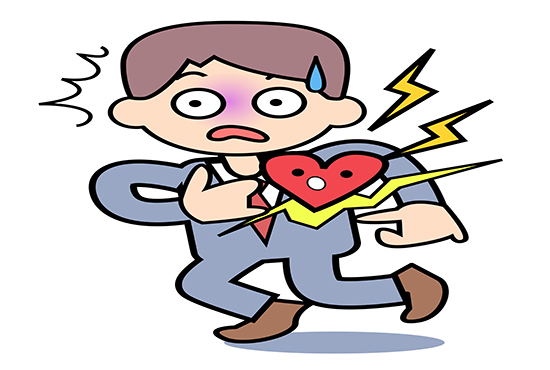

问：怎样强化四“丫”作为第二心脏的训练理念与训练方法？
答：首先，从婴幼儿开始就要强化游泳与爬行训练。人类受精卵发育成长的过程，就像一个肉眼看不见的小蝌蚪，慢慢长成肉眼看得见的一条小鱼，又长成一根小树干，接着树干长出四个小枝，每个小枝又长出5根小“丫”。
子宫与羊水是人类对大海永恒的记忆。胎儿在母体子宫里，游弋于与海水成分近似的羊水之中，天生就会憋气就会潜泳。当胎儿通过产道或剖宫产降生，完成宫内脐带式呼吸到宫外肺式呼吸的急剧转变时，游泳的记忆却依然与生俱来。婴儿游泳时，四“丫”不停地刨水，在飘浮中拍打中自由自在地前进。天生就游刃有余地掌握了这项最好的强健心脏肺脏训练肌肉保护关节的漂浮运动。
在发达国家，水中分娩及尽早让婴儿游泳特别是不停地潜入水中游泳，已成为健身健康时尚，更成为人生生命里程科学训练的必然开端。往往是母亲与婴儿同时下水同时训练。教练在水中放一个项圈，母亲先潜水钻过去，露出头换气后，接住教练推送潜过项圈的婴儿。在一部纪录片中显示，小婴儿不论是露出水中还是潜入水中，都没有丝毫呛水的感觉，像一条小鱼一样钻来钻去，悠然自得。婴儿经常游泳，可以提高循环系统呼吸系统的功能：由于水对胸廊的压力，使婴儿胸大肌胸小肌肋间肌得到锻炼，心肌发达，心脏射血功能增强，心跳比同龄婴儿慢且有力， 肺泡通气量增加，全身器官得到携氧量增强，新陈代谢旺盛，微循环海涛作用增强。还能提高耐寒和抗病免疫能力。提高大脑的功能，增加胃肠的蠕动，加速生长发育。婴儿游泳还能建立良好的睡眠节律，白天水中运动累了，晚上就睡得香。
俗话说，七坐八爬。婴儿的爬行训练亦十分重要。但爬行比游泳好学亦不受场地限制，不论哪个年龄段都可轻而易举地捡起来。我们为什么要回归爬行呢？
人类在爬行进化为直立的过程中，类人猿的前肢慢慢地衍化成了人类的手，前肢不再承担爬走功能。直立的人，头颅立在心脏上面，全身血液70%低于心脏部位，心脏每分钟搏出的血液，从平躺时的5升下降为3升，导致血压升高。所以从生物力学的角度分析，高血压原因之一就是直立姿势造成的。
但凡四只脚着地的爬行动物，大多血压不高。因为爬行动物的心脏与头部几乎在同一水平上，心脏搏动时，不难把血液输向全身各处。但唯长颈鹿例外，它的头高高在上，是个天生的高血压。其心脏搏出的血流，必须有足够的冲力压力，才能保证头部血液供应。因此长颈鹿的心脏十分强大有力，心壁厚达7厘米以上，心脏重达10多公斤。静止心率每分钟可达100次，输出血量可达每分钟60升；心脏泵压可达300毫米汞柱，脑下部颈动脉血压维持于200毫米汞柱，其血压大约是人类成年人的3倍，是世界上血压最高的动物。这么高的血压为什么长颈鹿能耐受呢？原来长颈鹿的颈动脉在脑的基底部分散成许多小血管丛，形成一个复杂的网状海绵体，长颈鹿的颈静脉特别粗大，直径可达2厘米多，且有一系列能够禁受高血压的瓣膜。长颈鹿四“丫”着地，微循环在腾跳奔跑之中十分给力。而我们人类是从爬行进化而来，不具备长颈鹿心脏及动脉静脉形态先天特化的生理构造。所以，回归爬行训练爬行，是我们人类对原始生存方式的反思与实践。
我们的呼吸方式也由于直立而改变。爬行哺乳动物均为肺活量强大的腹式呼吸。人类学会走路后，却改为胸式呼吸为主，肺功能由于大部分肺细胞闲置而退化。直立更使我们的胃相对下垂，消化功能相对萎缩。直立还会使作用人体的地球引力与重力失去和谐，这是骨病的深层主因。直立后的大脑位置高而悬，直接压迫颈椎与整个椎体。人类作为生命支柱的脊柱从爬行时的拱形进化为直立的两个大“S”，四个生理弯曲，更易由于负重对椎体造成损伤。整个骨骼、关节、肌肉、韧带腾挪运动幅度均大大缩小，负荷大大加重，而循环功能特别是微循环的阻力障碍也大大增加。
一旦我们五体投地、四“丫”爬行，身体回归水平腾挪状态，心脏回归横向泵血，心脏负担顿时减轻。血氧可直供大脑，立即神清气爽、，心率随着运动量的增加而加快，血液回流心脏稳定舒畅，保障了心脏搏出血液与回收血液的动态平衡。使血压绝不会生理性升高。爬行让我们轻松回归腹式呼吸。比直立时的“胸式”呼吸吸入空气量陡增2—3倍，非常有益提升肺活量。爬行时四“丫”腾挪不停抓地，血液顺势回流，微循环的海涛冲击力作用发挥淋漓尽致，保证了动脉静脉血液轴流边流的通畅。爬行运动时，核心肌肉群得到了充分的利用及调动。爬行时改用了四肢，使脊柱卸下“大立柱”重负，可活动拉抻脊椎，改善各椎间盘挤压、移位的状况，缓解退行性趋势，有利于防治脊椎病变所造成的颈椎病、肩周炎、脊椎增生、腰椎间盘突出、坐骨神经痛、腰背痛等“腰为肾之府”，爬行对增强肾功能也好处多多。
爬行时，腹部器官和内脏由于肠系膜悬挂在引状脊柱上，并由腹肌收缩从下面托着，减少了内脏压力，对胃肾下垂患者非常有益，胃肠等内脏机能也得到增强。另每爬行一步，肛门收缩一次，还能防治痔疮。
爬行时，四肢四“丫”支撑体重，全身关节承受的压力大为减轻；不但改善各关节区域血液循环和营养代谢，还使关节周围的肌肉、肌腱、韧带、形态得到均衡锻炼。爬行时，我们四“丫”的穴位得到大地按摩，腿脚腕臂经络得到梳理，爬行更是四肢四“丫”带动全身肌肉骨骼的承重运动，能促进骨骼银行存钙有效防治骨质疏松。爬行时，双脚双腿可自由侧举、平举、高举，促使淤滞在微循环里的血液更易回流心脏，有效预防和减轻腿部静脉曲张，还可以促进脚踝部血液循环，防治痛风与糖尿病足。而同属于水平运动的游泳并不属于承重运动。所以，对于强化四“丫”作为第二心脏的训练理念与训练方法而言，爬行训练应比游泳训练更为重要更为简便易行。
爬行更被称为“返祖运动”，有民众受五禽戏锻炼启发，引发“五兽行”，学习老虎、大象、袋鼠、猩猩、熊这五种动物的爬走姿式，引发了爬行热。
爬行要注重保护。在公园等户外爬行中，可双手抓住熨斗状的木托或铁托，两腿后支，四“丫”着地爬行；可伸入一种带滑轮的小车，双手拄着边爬边滑。在家里爬行，最好是在地毯上，要小心家俱磕碰。注意爬行前做好准备活动，配戴必要的护具，清理好场地，注意安全。训练爬行可直线向前向后或转圈。爬行速度宜慢，爬幅宜小，重复2-3次，间歇20-30秒。一般每天锻炼1-2次，每次10至15分钟。爬行时穿衣要宽松舒适你并戴上护膝。手、足、膝部有坏疽、感染、化浓性病患、手术后伤口未痊愈者勿练。患有严重高血压、冠心病及脑动脉硬化的病人不宜进行此活动。
比爬行更简便立竿见影的是俯卧撑。既往，我们多次强调“回归俯卧撑抵抗快感（详见走进私人医生十六、十七）”，强调对训练核心肌肉群的重要作用。爬行动物四“丫”奔腾跳跃飞驰大地的抵抗地球引力的快感，被俯卧撑诠释得精准到位。俯卧撑在中国内地称作“俯卧撑”，在中国台湾称作“伏地挺身”，在中国香港澳门称作“掌上压”，初学者训练俯卧撑可以进行两组，每组5到10次；有一定基础后可做3组，每组10次；高水平训练可尝试4组，每组15到20次。俯卧撑主要锻炼的肌肉群有胸大肌和肱三头肌，同时还锻炼三角肌前束、前锯肌和喙肱肌及身体的其他部位。其主要作用是训练核心肌肉群，提高上肢、胸部、腰背和腹部肌肉的综合力量。俯卧撑比爬行更有力度更有挑战性，需要持之以恒的训练动机与心理动力。对心血管系统特别是微循环系统的动力推进更加明显更加深远。
平板支撑是一种类俯卧撑的肌肉训练方法，也被公认为是一种训练核心肌群的有效方法。训练时呈俯卧姿势，用脚趾和前臂支撑体重。手臂成弯曲状，并置放在肩膀下。任何时候都保持身体挺直，并尽可能最长时间保持这个位置。一定要注意肘关节和肩关节与身体都要保持直角。若要增加难度，手臂或腿可以提高。肩膀在肘部上方，保持控制腹肌持续收缩发力，收紧腹肌同时收紧盆底肌，保持臀部不高于肩部，脚之间与肩同宽。手部可以合十，在坚持75秒以上的时候适当抬高一下臀部，因为随着时间推移臀部会下沉，臀部和腰腿要尽量保持直线，颈部保持前倾。眼睛看向地面，保持均匀呼吸。每组保持60秒，每次训练4组，组与组之间休息不超过20秒。平板支撑世界纪录为3小时7分钟15秒，是由美国人乔治·霍德创造的。
推荐阅读：